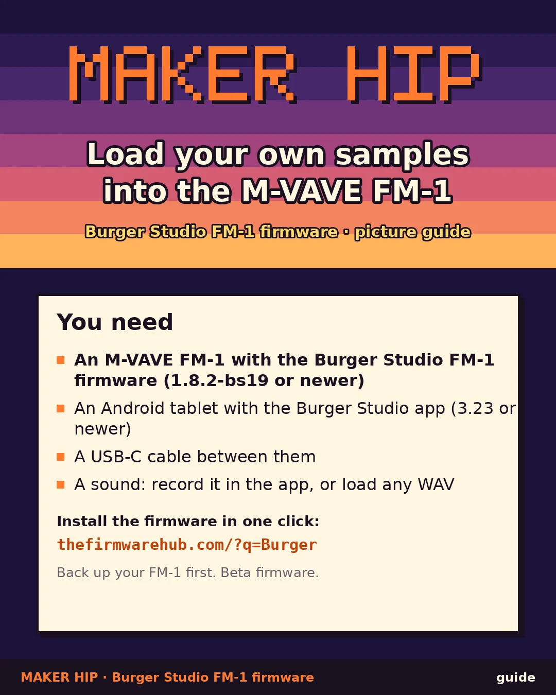
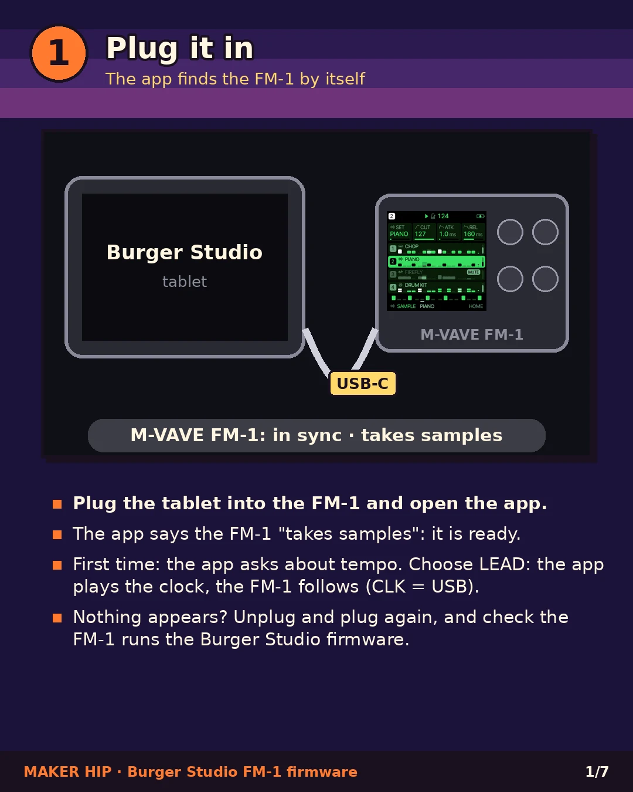
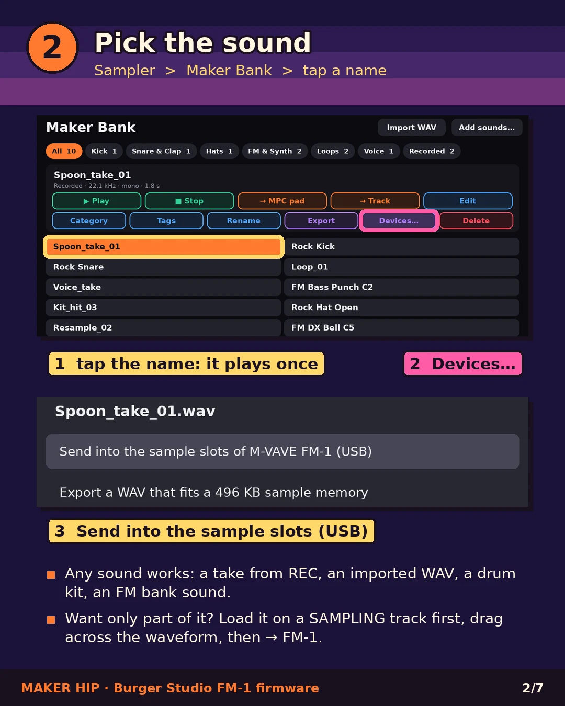
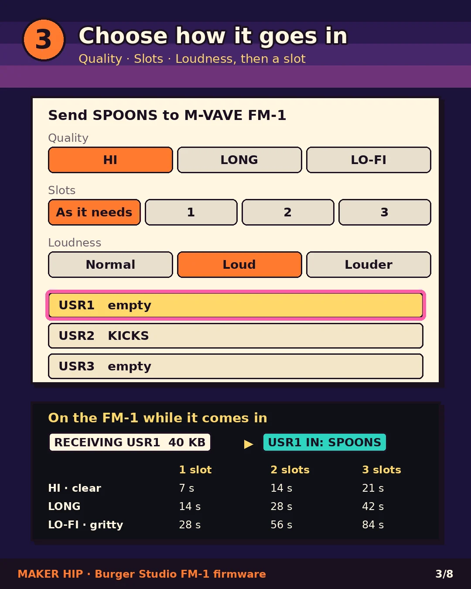
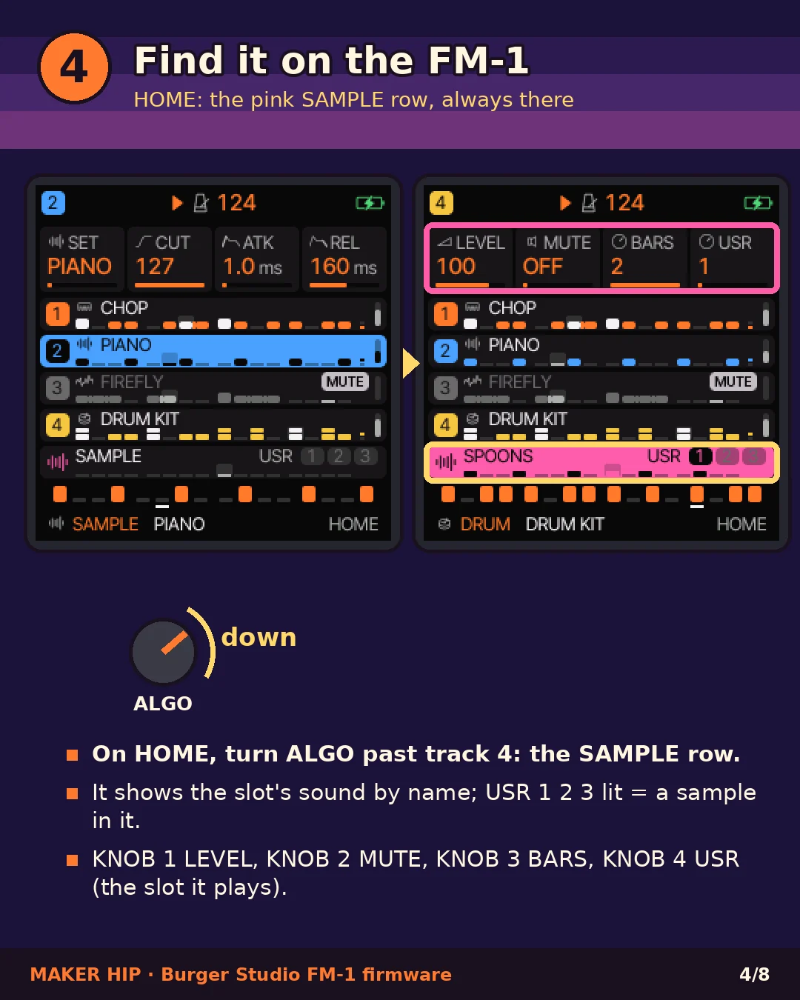
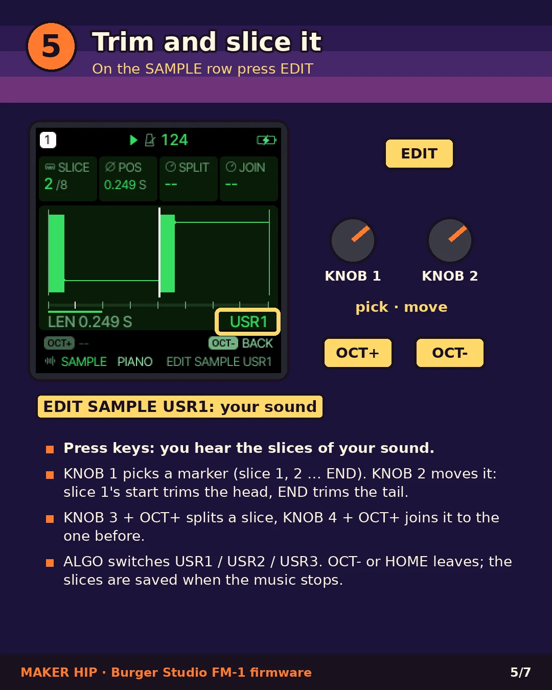
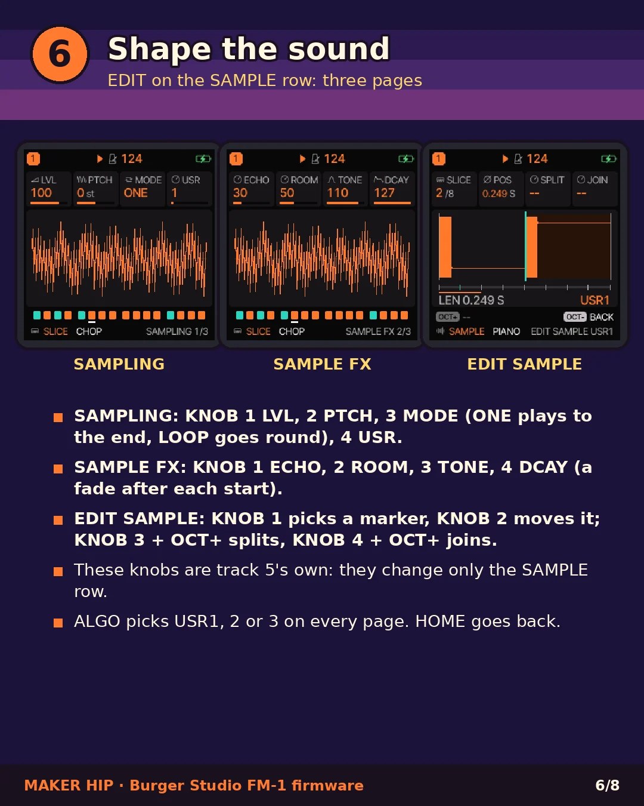
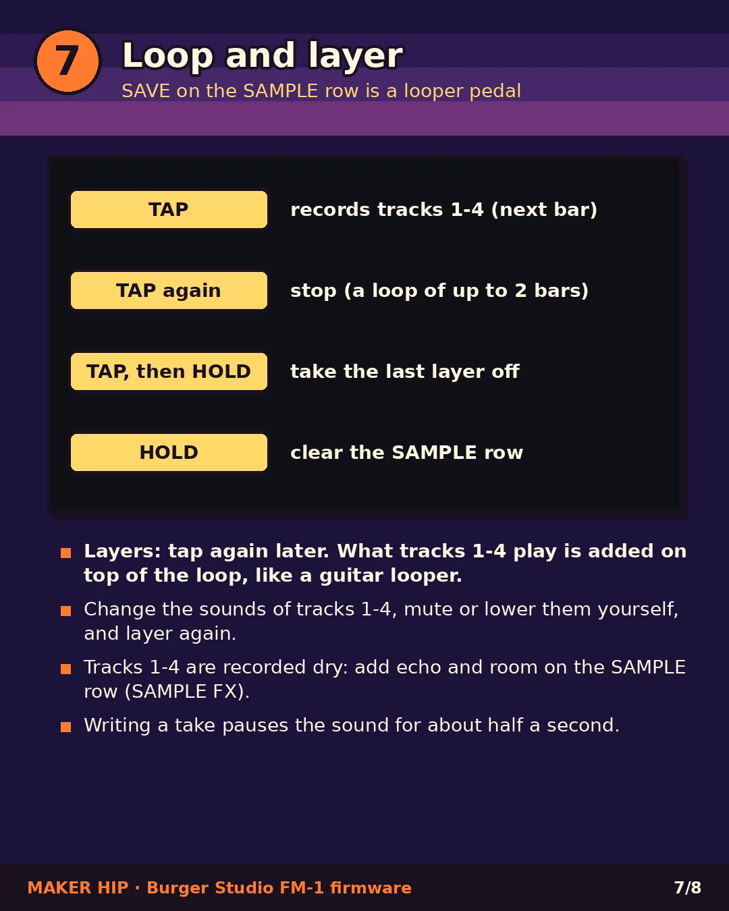

SAMPLING GUIDE
Load your own samples into the M-VAVE FM-1 with the Burger Studio FM-1 firmware: from the app to the FM-1's own screen, in seven steps.

What you need. The firmware, the app, one USB-C cable.

1 · Plug it in. The app finds the FM-1 by itself.

2 · Pick the sound. Maker Bank, a name, Devices… → Send.

3 · Choose how it goes in. HI, LONG or LO-FI; one to three slots.

4 · Find it on the FM-1. HOME, turn ALGO down to SAMPLE.

5 · Trim and slice it. EDIT, then KNOB 1 and KNOB 2.

6 · Play it on a track. SET or SRC = USR1.

7 · Level and tips. MIXER for volume, CLK = INT when unplugged.
READY?
Install the firmware in one click from The Firmware Hub, or with our own installer in Chrome. Back up your FM-1 first: it is a beta.